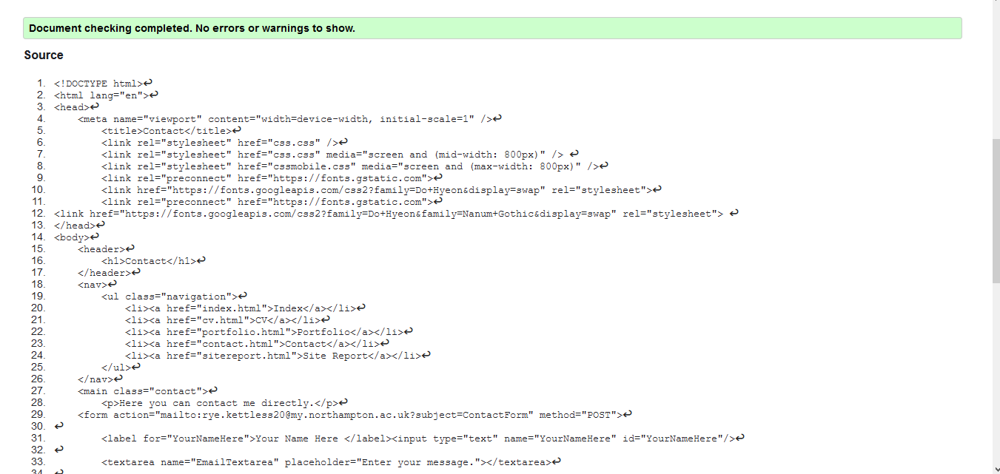
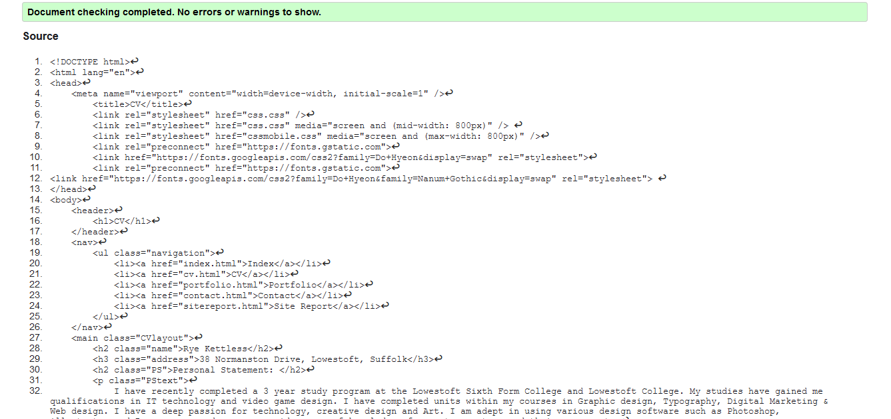
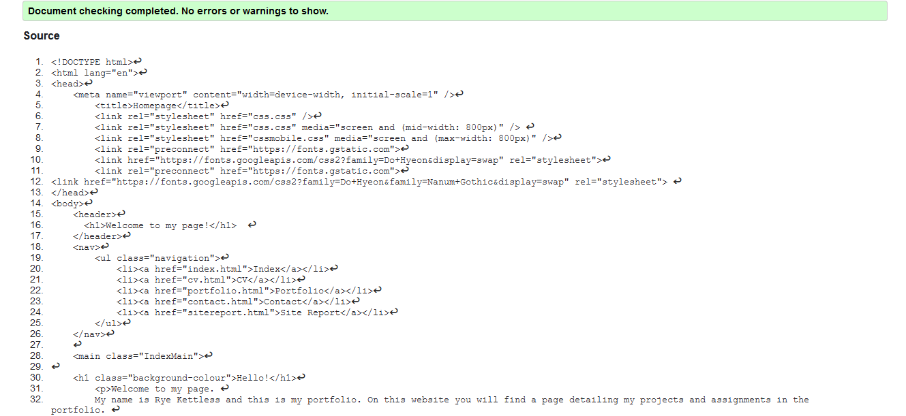
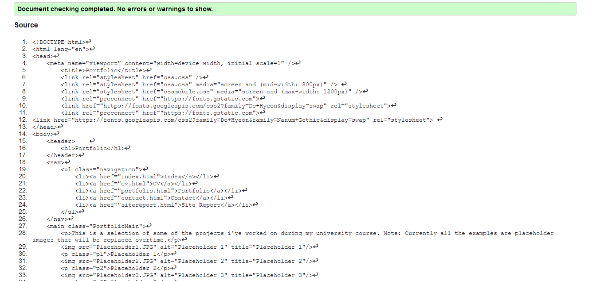

Introduction
Hello and welcome to my report where I document and discuss my experience working on this assignment. I will be covering my ups and downs when making this website. In addition to discussing my experience, I will be showing the validation screenshots for all of the files and useful links that helped me when making this website.
Design decisions
To start with I wanted a good idea what my website colour scheme will be. I thought that I would search for some examples of templates so I can use a consistent layout for each page with colours that compliment each other. I went on the website called visme.co and used the cool and fresh template for the colours. The template is a mix of pale greens and blues. The colour codes used are #05386B for the text and #5CBB95 for the backgrounds. The header is #EDF5E1 and later on I used a gradient to combine the colour #8EE4AF. The gradient tool was inspired by learning about this site called cssgradient.io which allowed to me to input my colour scheme and visually display what the gradient will look like before I inputted the code in the CSS. This site also has a tutorial that allowed me to give a gradient effect on text which I used on the index page with the “Hello!” header but, after using the CSS validator the background-clip: text attribute told me it was invalid, and I removed the code and reverted back to normal solid colour.
The next part of my design decisions is the font used. For my website I used google web fonts so I do not need to worry about compatibility issues with users who may not have certain fonts installed. The fonts I choose are Do Hyeon which I used for the headers and for links, the other font I used is Nanum Gothic which I used for the paragraph text. The two font choices where made as I wanted my site to have a more informal style with the text with the headers as that catches people’s eye when they visit the website. The bolded angular design on the header text I thought made it stand out but, to contrast I needed a more readable professional looking text for the paragraphs. I saw the Nanum Gothic font listed as a suggested pairing and decided to go with it.
The final consideration I made is the layout of each page. Originally the header displaying the name of the page was going to be on the top with the navigation bar below it this was changed as I thought the site looked better with a larger heading with a smaller navigation bar in terms of the font size and the site looked more in line with most modern websites that has a navigation bar on the top. The final layout for each page was “nav, header, main, footer” in that order. The desktop version is do not have an aside as that was used for the mobile navigation menu which resided next to the main portion. Each page has its own main layout to illustrate the use columns for example the CV page is laid out in a 3*7 grid. I used CSS to manually place each header and paragraph accordingly. For the CV I gave each tag a class so it was easier for me to place each tag in the columns I wanted and in the end each row showcases each part of my CV with the first row being my personal statement and the second row is about my work experience etc. The layout for the portfolio uses a similar layout but contains images. A lot of trial error of getting each of the images to fit within the layout of the page as they had to be resized and adjusted so each image is displayed in the centre of the page using margin attribute in CSS. The portfolio also had text under each image which also had to be adjusted to fit evenly across the page. I opted a 2*3 grid and used 6 placeholder images but, this time I used grid-template-area attribute instead on manually placing each row and column like on the CV page. The Contact page also had a lot of issues trying to get to display how I wanted to. For this page I wanted a form for your name and a text area box for your message. I also wanted to add a map of where I live by embedding HTML from Google maps although I later changed it to a static image as to avoid using iframes on the website. The image instead is a PNG screenshot of my address that is used so that the contact form is not stretched across the whole webpage. In the mobile version I removed the image entirely as there was no need for it. Many of the animations I used throughout the side are keyframes that slide elements onto the screen. Page that does this is the header on the index page and images on the portfolio page. The mobile version also does this to the navigation bar although that does not use keyframes. Other effects I utilised are hover effects for the navigation links that transition to a lighter colour when your cursor hovers over each link, another hover effect is present on the portfolio page where each image scales in size when you hover your cursor over each image. On the mobile page the hamburger icon when clicked rotates into a line when the navigation menu slides in and will rotate back when clicked again but, all hover effects are disabled due to touch screen devices not being able to take advantage to those features. In the portfolio page I used two key frames the slide the images into the page from two directions. Each photo is slightly delayed on each row so the top row flies in first (in 1 second) the second row is delayed by half a second and the final row has the images fly into the page in 2 seconds. The accompanying text also has the same type on animation that is separate so that it matches the centre of the images but, is designed to match the same time frame of the images to make it consistent with the rest of the page. On the mobile page I wanted an animation for the hamburger icon to rotate. I started looking at tutorials, although most tutorials either used JavaScript to get it to the work (more on this below) the icon animation starts when an invisible checkbox is clicked that is under the icon and only the three bars rotate into a single line. Originally the code I used for the cubic Bezier had the animation a lot quicker and snappier when it rotates but, I used this website cubic-bezier.com to help me get the animation to be smoother when it turns. Finally, as the animation starts for the icon so does the menu which flies in the same manner as the other examples throughout the site. When designing the mobile version, I started with the layout of every page. The main difference with the two is inclusion of the aside. The Mobile version of the site launches when the screen has a max-width of 800 pixels which encompasses both tablets and phone screens. Originally, I wanted to have the hamburger icon fixed on the screen but, visually the icon changes into a single line rather than 3 additionally the mobile menu was also going to be fixed but, when changing the orientation of the phone using the developer tools in Firefox the menu is fixed in the position where half of the menu is not visible so I had to change it so the menu can be visible in both modes. The hamburger icon was created in HTML by using three span tags that make up the lines. In CSS I selected the asides ID (#hamburger) and the span elements gave them colour, width, height to create the graphic that is displayed on screen. To launch the menu, I used a checkbox and positioned it over the span element, I used z-index to place the checkbox under the hamburger and the opacity to 0 so it still existed on the page and can be checked. The CSS displays the menu off screen so that an animation plays out, when unticked the menu is set to display: none. For the layout of each page, I made sure that all the elements have different grid layout so that each page displays the aside with the main being rearranged to account for the mobile menu. CV and portfolio page now display the content as if it were a list in a singular column. I retooled the animations in the portfolio page so that the images fly from the left rather than both. Pictures that appear through the site had to be modified so they did not appear too large, so they do not overlap the menu but, mostly everything needed to be rearranged to fit on a smaller screen. I think when starting this project and this term I have learnt to use HTML and CSS more effectively than previously. My knowledge has been more expanded than previous times when I started learning about web design. I think the most rewarding aspects of this term is being able to develop a full website with different pages and having a version for mobile devices, something that was not initially covered when I originally covered web design in 6th form. Another valuable lesson that I learnt from this assignment is how using good practise and understanding why certain techniques should not be used (using font tags and position: absolute for an always visible elements as an example) as learning this early on will get me to be accustom to the preferred way. I believe that what I built is something to be improved upon as the course progresses on but, now is a suitable starting point to add and improve on. Photos on portfolio, index and contact pages are by me. CSS Gradient, 2017. CSS Gradient. [Online]
Available at: https://cssgradient.io
[Accessed 16 December 2020].
Mozilla, 2020. transform. [Online]
Available at: https://developer.mozilla.org/en-US/docs/Web/CSS/transform
[Accessed 16 December 2020].
Szyk, B., n.d. Px to Em calculator. [Online]
Available at: https://www.omnicalculator.com/conversion/px-to-em
[Accessed 14 December 2020].
Terwin, E., 2015. Pure CSS Hamburger fold-out menu. [Online]
Available at: https://codepen.io/erikterwan/pen/EVzeRP
[Accessed 9 November 2020].
Verou, L., 2011. cubic bezier. [Online]
Available at: https://cubic-bezier.com/
[Accessed 22 December 2020].
brothers, W., n.d. Do Hyeon. [Online]
Available at: https://fonts.google.com/specimen/Do+Hyeon?sidebar.open=true&selection.family=Do+Hyeon#standard-styles
[Accessed 11 December 2020].
https://github.com/ryeket01/AssignmentAnimations and effects
Mobile version
Conclusion
References and useful links
GitHub link
Validation



